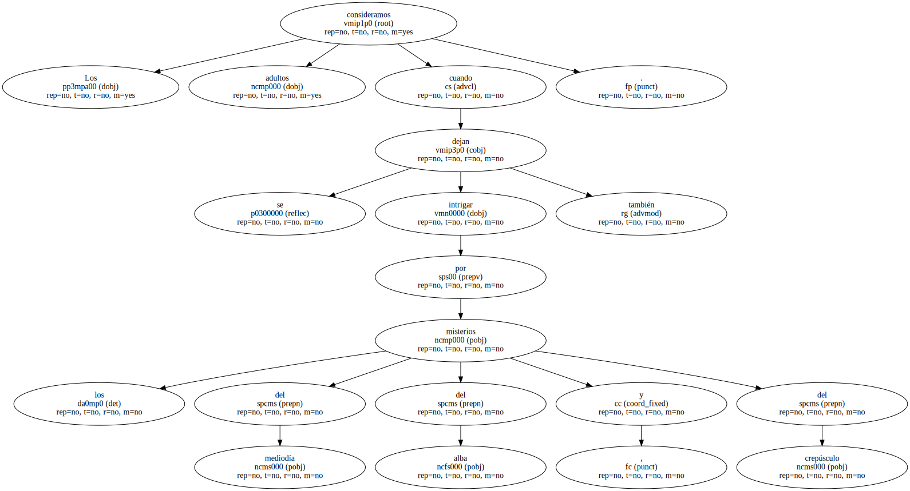
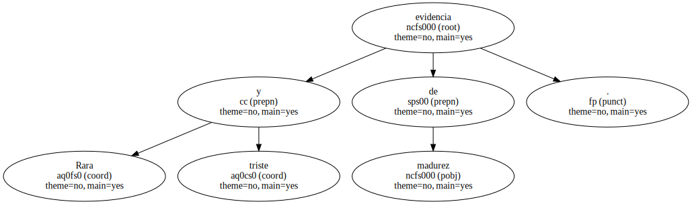
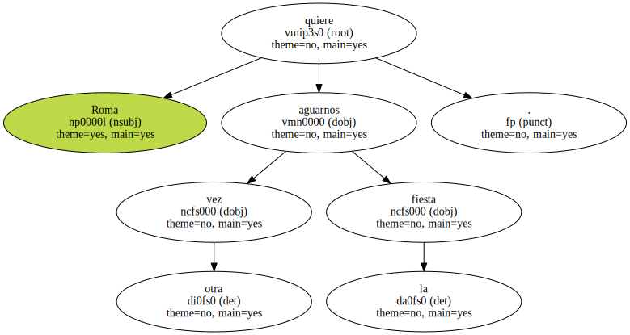
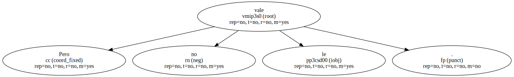
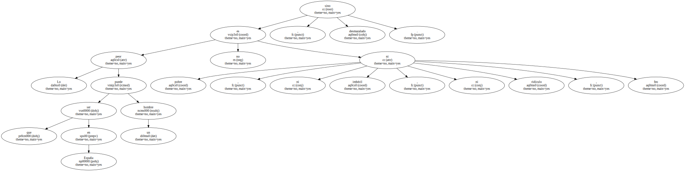
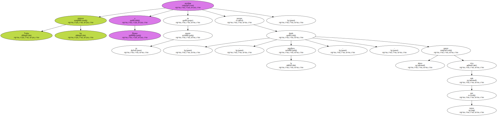
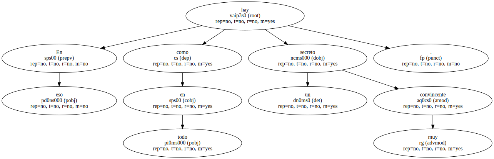
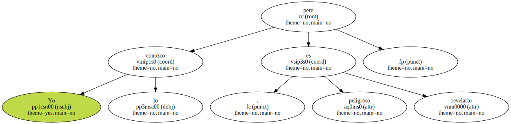
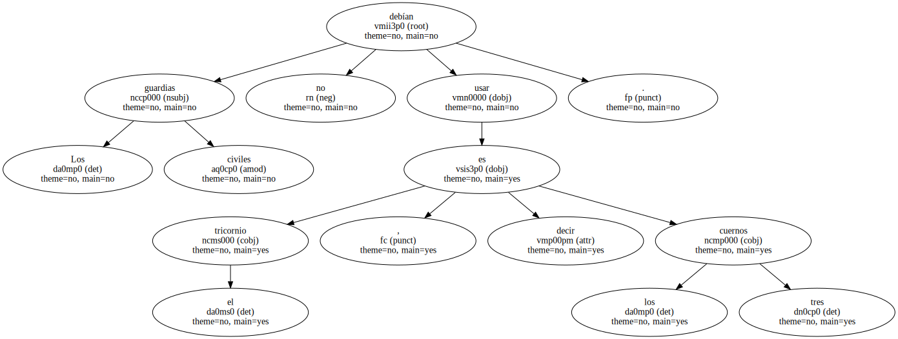

Los niños se inquietan con las tinieblas nocturnas.

Los consideramos adultos cuando se dejan intrigar también por los misterios del mediodía , del alba y del crepúsculo.
Rara y triste evidencia de madurez.
La vida se polariza hacia el placer y su mejor símbolo es Venus , estrella del crepúsculo del alba : pero el nombre de esa estrella en latín es Lucifer.

Roma quiere aguarnos otra vez la fiesta.
Pero no le vale.
Lo peor que puede ser un hombre en España no es pobre , ni imbécil , ni ridículo , ni feo , sino desmazalado.
Todos los pintores envidian a Picasso en su muerte porque ahora - - desde la sepultura - - parece más vivo que nunca.
En eso como en todo hay un secreto muy convincente.
Yo lo conozco , pero es peligroso revelarlo.
Los guardias civiles no debían usar el tricornio , es decir los tres cuernos.
